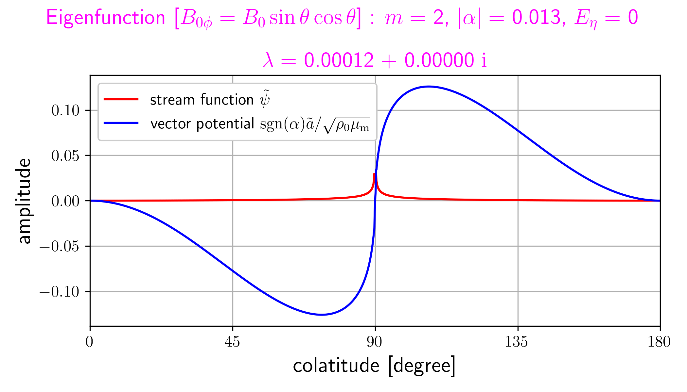
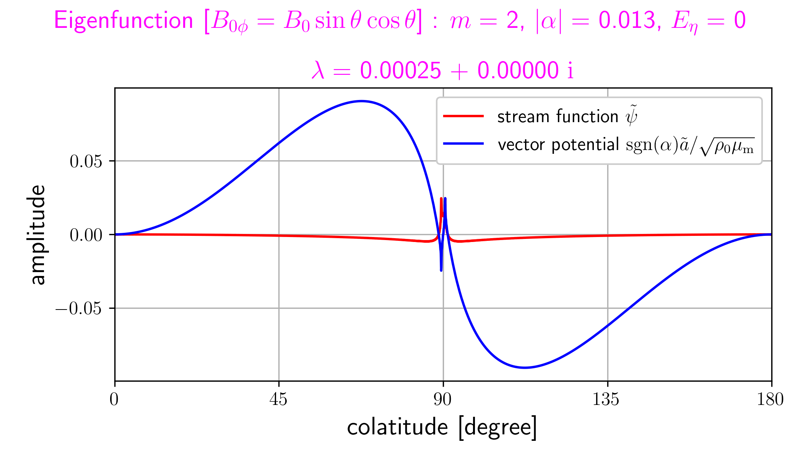
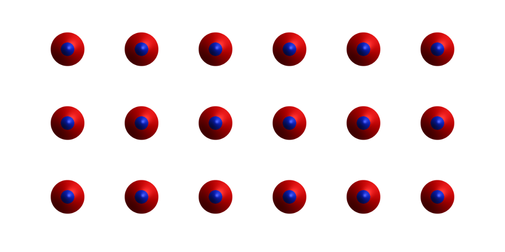
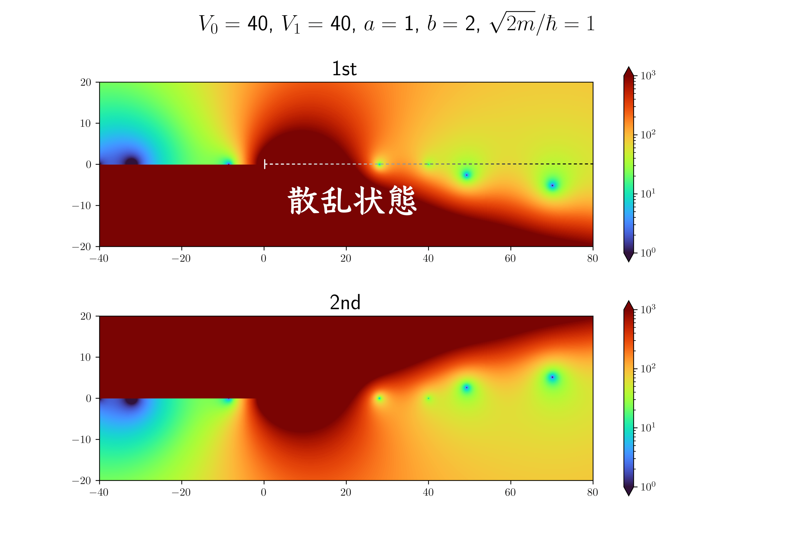
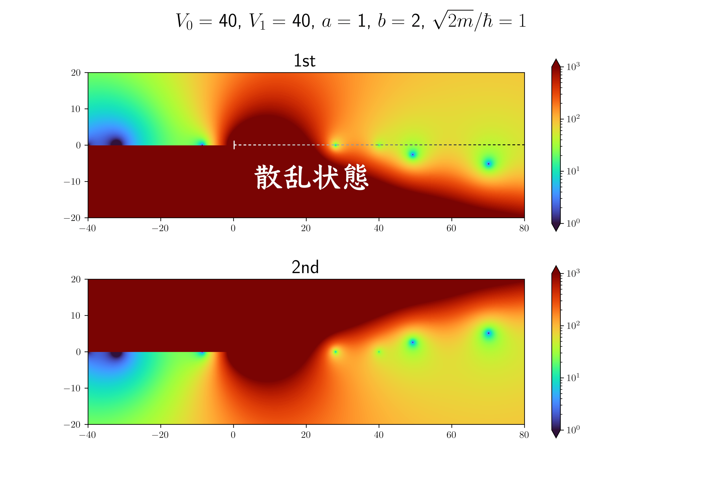

スペクトル変形の方法による quasi-mode の掘り起こし
スペクトル変形 (spectral deformation) の方法による
quasi-mode の掘り起こし
(注) 数値計算法であるスペクトル法やスペクトル変換法とは全く別物.
中島 涼輔 (九州大学 大学院理学研究院)
- Overview モード [ O キー ] / フルスクリーンモード [ F キー ]
-
スライド中のマークを hover すると詳細が表示されます
こんな風に
これまでの研究のあらすじ
- 地球コア最上部にあるかもしれない安定成層内を伝播する磁気流体波動をずっと考えている.
- 線形波動を考える際の背景磁場を非 Malkus 磁場に変更すると, 固有値の様子が大きく変わってしまう.
-
特に非散逸の場合, 地磁気観測と比較可能な遅い磁気 Rossby 波が消失し,
その代わりに連続固有値が現れる. -
より複雑な設定の問題を理解するために
最も単純なはずの非散逸の場合を理解しておきたい.
遅い磁気 Rossby 波の名残 ?
- 何かある?
-
遅い磁気 Rossby 波と同じく,
磁気エネルギーが支配的
(グラフ上で青色). -
しかし,
このあたりの固有関数をしらみつぶしに見てみても,
他の連続モードと同じく特異的な構造あり.  - quasi-mode (?)
-
最近,
この話題の難しすぎない論文をいくつか見つけて,
ほんの少しわかってきた.
近い概念かもしれない用語: 一般化スペクトル, 埋蔵固有値, 共鳴極, Landau 極
今回説明する quasi-mode の具体例
-
無衝突プラズマ
(目的：物理的イメージをつかむ)
- プラズマ振動 (離散モード) + 粒子の運動 (連続モード) = Landau 減衰 (quasi-mode)
- 波動と粒子の相互作用により, 波動・粒子間でエネルギーをやりとり.
- その結果, 散逸がなくても波動は減衰 or 不安定化.
-
量子力学における共鳴状態
(目的："複素化"に慣れる)
-
散乱状態 ("連続モード") に近いが,
波動関数が外向き波のみで
束縛状態 ("離散モード") にも近い状態 (共鳴状態, "quasi-mode") が可能な場合がある. - エネルギー固有値が複素数になって, 波動関数は時間的に減衰.
-
散乱状態 ("連続モード") に近いが,
波動関数が外向き波のみで
-
非粘性 2 次元渦
(目的：数値的に求める方法を知る)
- Kelvin モード (離散モード) + 軸対称な背景流 (連続モード) = quasi-mode
- 波動と背景流の相互作用により, 波動・背景流間でエネルギーをやりとり
- その結果, 散逸がなくても楕円渦が軸対称な渦へ減衰
- 位相混合は連続モード単独で起こる減衰
Landau 減衰
冷たいプラズマ近似 (粒子的描像)
電子 ($\textcolor{red}{\mathrm{e}}$) とイオン ($\textcolor{blue}{\mathrm{i}}$) は最初に静止していて, 無磁場中を一斉に運動し始めるとする.

$m$: 各粒子の質量, $\bm{v}$: 各粒子の速度,
$e$: 電気素量, $\bm{E}$: 電場, $\bm{J}$:
電流, $n$: 各粒子の数密度, $\varepsilon_0$:
真空の誘電率
\[
\frac{\uppartial n_\mathrm{e}}{\uppartial
t}+\div(n_\mathrm{e}\bm{v}_\mathrm{e})\,=\,0\,,\quad
\frac{\uppartial n_\mathrm{i}}{\uppartial
t}+\div(n_\mathrm{i}\bm{v}_\mathrm{i})\,=\,0\,,\quad
\div\bm{E}\,=\,\frac{e(n_\mathrm{i}-n_\mathrm{e})}{\varepsilon_0}
\] が暗に成立.
イオンは電子に比べ質量が十分大きい ($m_\mathrm{i}\to\infty$) ので, イオンは静止している ($\bm{v}_\mathrm{i}=0$) と近似.
これを解くと, 振動解 (離散モード) が得られる.
電子が動く → 電子の変位と逆向きの電場ができる (分極) → Coulomb 力で元の位置の方向に戻される
熱いプラズマ (Vlasov 方程式〜流体的描像)
衝突がなければ, 粒子数は保存. $f$ は各粒子の速度分布関数 (数密度 $n(\bm{r},t)=\iiint f(\bm{r},\bm{v},t) \upd^3\bm{v}$).
Vlasov 方程式の $\bm{v}$ についてのモーメントをとると, 流体の式になる.
$\rho=mn$: 各粒子の質量密度,
$\bm{u}=n^{-1}\iiint \bm{v}f\upd^3\bm{v}$:
各粒子の平均速度,
$\underline{\underline{\mathsf{P}}}=\rho\left[n^{-1}\iiint(\bm{v}\otimes\bm{v})f\upd^3\bm{v}-\bm{u}\otimes\bm{u}\right]=p\underline{\underline{\mathsf{I}}}$:
各粒子の圧力テンソル
イオンは平均的に静止している
($\rho_\mathrm{i}\to\infty$, $\bm{u}_\mathrm{i}=0$)
と近似し, 準中性条件, 理想気体, 断熱を仮定して,
線形化すると, 冷たいプラズマの運動方程式 (with
圧力勾配) に一致.
$\gamma$: 各粒子の比熱比, $k_\mathrm{B}$:
Boltzmann 定数, $T$: 各粒子の温度 ($T\to0$
で冷たいプラズマ近似),
$\omega$: 角振動数, $k$: 波数
$n_\mathrm{e}=n_{\mathrm{e}0}+n_{\mathrm{e}1}$
($n_\mathrm{i}=n_{\mathrm{e}0}$),
$\bm{u}_\mathrm{e}=\bm{u}_{\mathrm{e}1}$,
$p_\mathrm{e}=p_{\mathrm{e}0}+p_{\mathrm{e}1}=(n_{\mathrm{e}0}+\gamma_\mathrm{e}n_{\mathrm{e}1})k_\mathrm{B}T_\mathrm{e}$,
$\bm{E}=\bm{E}_{1}$ と線型化.
Vlasov 方程式から分散関係を求める
これまでと同様な近似と線形化を行う.
$m_\mathrm{i}\to\infty$, $f_\mathrm{i}$
は時間的・空間的に一様 ($\bm{v}$ のみに依存),
$f_\mathrm{e}=f_{\mathrm{e}0}+f_{\mathrm{e}1}$
(準中性条件 $f_\mathrm{i}=f_{\mathrm{e}0}$),
$\bm{E}=\bm{E}_1=-\bm{\nabla}\phi_1$
Fourier 変換 ($f(\bm{r},\bm{v},t)=\tilde{f}(\bm{k},\bm{v},\omega)\upe^{\upi(\bm{k}\ip\bm{r}-\omega t)}$) して, $\bm{v}=v_k(\bm{k}/k)+\bm{v}_\perp$ ($\bm{k}\ip\bm{v}_\perp=0$), $\tilde{g}=\iint \tilde{f}\upd^2\bm{v}_\perp$ とすると,
分散関係 (離散モードの条件) は $\displaystyle{\varepsilon(k,\omega)\equiv1+\frac{\omega_\mathrm{pe}^2}{n_{\mathrm{e}0}k^2}\int_{-\infty}^\infty\frac{(\upd g_{\mathrm{e}0}/\upd v_k)}{(\omega/k)-v_k}\upd v_k=0}$.
特異な積分がある. この式が, 前スライドの分散関係 ($\omega^2=\omega_\mathrm{pe}^2+(\gamma_\mathrm{e}k_\mathrm{B}T_\mathrm{e}/m_\mathrm{e})k^2$) と等価 ?
Landau (1946) の方法
速度分布関数は Maxwell 分布 $g_{\mathrm{e}0}=n_{\mathrm{e}0}\sqrt{m_\mathrm{e}/2\uppi k_\mathrm{B}T_\mathrm{e}}\exp(-m_\mathrm{e}v_k^2/2k_\mathrm{B}T_\mathrm{e})$ を仮定 (理想気体)
この式において, $\omega$ はパラメータだが, 後で行われる Fourier 逆変換のことを忘れてはいけない.
因果律
を考慮すると, 例えば下の $\tilde{g}_{\mathrm{e}1}$
の固有関数 (Van Kampen モード) に対して,
$\mathrm{Im}(\omega)>0$ (Laplace 逆変換の
$\mathrm{Re}(s)>0$ に相当)
で逆変換の積分をする必要あり.
$\mathcal{P}$: Cauchy の主値, $\delta$: デルタ関数
ゆえに, $\varepsilon(k,\omega)$ の積分の特異点
$v_k=\omega/k$ は, 複素 $v_k$ 平面の上半平面にある.
一方, $v_k$ の積分経路は実軸上.
Landau (1946) の方法 (つづき)
後で行われる Fourier 逆変換で留数定理を使う際に,
$\mathrm{Im}(\omega)<0$ へ動かしてしまうので,
$\varepsilon(k,\omega)$ の積分の特異点 $v_k=\omega/k$
は, 実軸上の積分経路を引っ掛けて下半平面へ移動.
特に, $\omega=\omega_*$ ($\mathrm{Im}(\omega_*)<0$)
に極があった場合,
特異点 $v_k=\omega_*/k$ を下から迂回するような経路で
$\varepsilon(k,\omega_*)$ を計算しなければならない.
もし, $0<-\mathrm{Im}(\omega_*/k)\ll|\mathrm{Re}(\omega_*/k)|$ ならば, (特異点まわりを反時計回りに半周するので)
Landau (1946) の方法 (つづき 2)
さらに, $k\to0$ (波長: 大) の場合,
$[v_k-(\omega_*/k)]^{-1}=-(k/\omega_*)\{1+(k/\omega_*)v_k+(k/\omega_*)^2v_k^2+(k/\omega_*)^3v_k^3+\upO(k^4)\}$
とできて,
$|\mathrm{Re}(\omega_*)|\gg|\mathrm{Im}(\omega_*)|$ と $k\to0$ に気をつけてこれを解くと, ($1$ 次元振動なので $\gamma_\mathrm{e}=(1+2)/1=3$)
- 実部はプラズマ振動 (with 音波) と同じ.
-
散逸がないのに虚部が出てくる.
減衰率は背景場
(今の場合, Maxwell 分布)
の形に依存.
虚部は $\varepsilon(k,\omega_*)$ の $\upO(k^4/k^2)$ の項 (圧力の効果 ?) を落としても出てくる. - 導出の途中で 背景場 $g_{\mathrm{e}0}(v_k)$ の $v_k$ に複素数 ($\omega_*/k$) が代入 (解析接続) されている.
Landau 減衰のよくある物理的説明
第12巻 天体物理学の基礎(2)
より
-
波動 (今の場合, プラズマ振動) と
$v_k\sim(\omega/k)$ の粒子が相互作用して,
エネルギーをやりとりする. -
波動より少し遅い粒子は波動によって加速され,
波動より少し速い粒子は減速される. -
Maxwell 分布の場合,
速度が遅い粒子の方が速い粒子よりも多いので,
全体として波動がエネルギーを失う. -
と書いてある文献をよく見るが,
線形化した Vlasov 方程式を使って
この説明をどう正当化するのかは
中島はわかっていない.
sin 型の電場に加 (減) 速される粒子を使った説明をたまに見かけるが,
線形化した Vlasov 方程式との対応関係がいまいちわからない.
ところで, 連続モード
$\tilde{g}_{\mathrm{e}1}$ の固有関数 (Van Kampen モード; Van Kampen (1955), Case (1959)) を再掲.
$\tilde{\phi}_1$ のみの式は $\varepsilon(k,\omega)\tilde{\phi}_1=\varepsilon(k,\omega)\tilde{\phi}_1$ となっていることに注意.
このように表せるということは,
$\varepsilon(k,\omega)\neq0$ でも
固有関数が形式的に書け,
連続モードが存在できることを意味する.
| 離散モード | $\varepsilon(k,\omega)=0$ |
| quasi-mode | |
| 連続モード | $\varepsilon(k,\omega)\neq0$ |
超関数なので, ($\varepsilon(k,\omega)\neq0$ の場合)
固有関数を 1 つだけ取り出して議論することはできない.
Fourier 逆変換すると,
物理的な意味がありげな滑らかな関数になる.
$\varepsilon(k,\omega)=0$ の場合, $\mathcal{P}$
は不要になる.
位相混合
連続モードを理解するために, $e=0$ の場合 (実は中性粒子だった場合) を考える.
このとき, $\varepsilon(k,\omega)=1$, $\dfrac{\tilde{g}_{\mathrm{e}1}}{G_0}\equiv\dfrac{\tilde{g}_{\mathrm{e}1}}{\int \tilde{g}_{\mathrm{e}1}(k,v_{k*},\omega)\upd v_{k*}}=\delta[(\omega/k)-v_k]$
Riemann-Lebesgue の補題により,
$n_{\mathrm{e}1}$ (数密度の摂動) は $0$
に近づく.
これは連続モード単独の非散逸減衰.
[上] $g_{\mathrm{e}1}$ (横軸: $\bm{r}\ip(\bm{k}/k)$, 縦軸: $v_k$), [下] $n_{\mathrm{e}1}$ (横軸: $\bm{r}\ip(\bm{k}/k)$)
ここまでのまとめ
-
離散モードがありそうな問題設定で,
連続モードが共存してしまう場合,
離散モードは quasi-mode (振動数の実部は離散モード的だが, 非散逸減衰する) に
変化する (?)- なぜこんなことが起こるのかは, 数学的にも物理的にも中島はよくわかっていない.
-
連続固有値の位置が切断になるので,
離散固有値が連続固有値に埋もれると,
主枝とは別の分岐に潜り込むらしい (?) -
連続モードは位相混合で非散逸減衰できることが,
離散モードの quasi-mode 化の物理に重要なのでは ? と根拠もなく想像している.
- quasi-mode の減衰率は, 背景場の形状に依存する.
- 導出の途中で背景場を解析接続したことが, 本発表の内容のカギ.
量子力学的
共鳴状態
なぜ急に量子力学の話をするのか ?
-
ここでは, 時間に依存しない Schrödinger 方程式
(一粒子系, 磁場なし) を考える.
\[ \left(-\frac{\hbar^2}{2m}\nabla^2+V(\bm{r})\right)\psi(\bm{r})\,=\,E\psi(\bm{r})\,,\qquad\text{時間依存部分}\propto\upe^{-\upi(E/\hbar)t} \]
$\hbar$: 換算 Planck 定数 (Dirac 定数), $m$: 粒子の質量, $V$: ポテンシャル,
$\psi$: 波動関数 (の空間依存部分), $E$: エネルギー固有値 -
これまでの話と (これからの話と)
似ているところもある.
- 粒子のエネルギーが, ポテンシャルの無限遠での値よりも低い束縛状態 ("離散モード")
- 〃高い散乱状態 ("連続モード")
- 散乱状態に近いが, 束縛状態にも似ている共鳴状態 ("quasi-mode")
-
タイトルにある「スペクトル変形の方法」に近い方法は,
原子核物理 (?) の分野で研究され、使われているらしい (中島はよくわかっていない).- 複素座標スケーリング法、複素スケーリング法、複素座標回転法
- ただし, 数学的・物理的に完全な対応関係があるわけではないので注意.
球対称なステップ状のポテンシャルを考える
-
束縛状態 [$-V_0\leq E< 0$]
-
境界条件 : $r\to0$ で $\psi$
が有限,
$r\to\infty$ で $|\psi|^2\ll\mathrm{O}(r^{-3})$. -
\[\begin{align} &r\psi\,=\,\notag\\ &\begin{cases} A\sin\left(\frac{\sqrt{2m(E+V_0)}}{\hbar}r\right) & (0\leq r\leq a) \\ B\sinh\left(\frac{\sqrt{2m(V_1-E)}}{\hbar}r\right)+C\cosh\left(\frac{\sqrt{2m(V_1-E)}}{\hbar}r\right) & (a< r\leq b) \\ D\exp\left(-\frac{\sqrt{2m(-E)}}{\hbar}r\right) & (b< r) \end{cases} \notag \end{align}\]
-
接続条件 :
$r=a$, $b$ で $\psi$ と $(\upd \psi/\upd r)$ が連続. - 4 本の接続条件から任意定数 $A$, $B$, $C$, $D$ が求まり, 離散固有値 $E$ が決まる.
-
境界条件 : $r\to0$ で $\psi$
が有限,
-
散乱状態 [$0\leq E< V_1$, $0< V_1< E$]
-
境界条件 : $r\to0$ で $\psi$
が有限,
$r\to\infty$ の条件を満たせない (規格化できない). -
\[\begin{align} &r\psi\,=\,\notag\\ &\begin{cases} A\sin\left(\frac{\sqrt{2m(E+V_0)}}{\hbar}r\right) & (0\leq r\leq a) \\ B\sinh\left(\frac{\sqrt{2m(V_1-E)}}{\hbar}r\right)+C\cosh\left(\frac{\sqrt{2m(V_1-E)}}{\hbar}r\right) & (a< r\leq b, 0\leq E< V_1) \\ B\sin\left(\frac{\sqrt{2m(E-V_1)}}{\hbar}r\right)+C\cos\left(\frac{\sqrt{2m(E-V_1)}}{\hbar}r\right) & (a< r\leq b, 0< V_1< E) \\ \textcolor{red}{D_1\sin\left(\frac{\sqrt{2mE}}{\hbar}r\right)+D_2\cos\left(\frac{\sqrt{2mE}}{\hbar}r\right)} & (b< r) \end{cases} \notag \end{align}\]
- 接続条件は, 束縛状態と同じ.
- 接続条件 4 つに対し, 任意定数は 5 つなので, 固有値 $E$ は任意 (連続固有値).
-
境界条件 : $r\to0$ で $\psi$
が有限,
外向き波の解 (Siegert 境界条件; Siegert (1939))
- 散乱状態 ($E\geq 0$) に対し, $r\to\infty$ で外向き波だけという条件を追加でつけてみる.
-
$b< r$ で
$r\psi\times\text{(時間依存部分)}\propto
\upe^{\upi(\textcolor{red}{\pm\sqrt{2mE}r-Et})/\hbar}$
なので
\[ r\psi\,=\,\begin{cases} A\sin\left(\frac{\sqrt{2m(E+V_0)}}{\hbar}r\right) & (0\leq r\leq a) \\ B\sinh\left(\frac{\sqrt{2m(V_1-E)}}{\hbar}r\right)+C\cosh\left(\frac{\sqrt{2m(V_1-E)}}{\hbar}r\right) & (a< r\leq b) \\ D\exp\left(\textcolor{red}{+}i\frac{\sqrt{2mE}}{\hbar}r\right) & (b< r) \end{cases} \]
根号の中身が負になったら, 純虚数にするということにすれば,
上の式一つで, 束縛状態と (外向き波だけの) 散乱状態を一緒に計算できる. -
接続条件を $\mathsf{A}\bm{x}=0$
($\bm{x}^{\mathsf{T}}=(A, B, C, D)$)
と書いたときに,
$\det(\mathsf{A})=0$ となる $E$ を求める. -
さらに,
$E$ は複素数になっても良いことにして計算する.
このとき, $\sqrt{E}$ などは 2 価の関数になることに注意.- $\mathrm{Im}(E)=0$ が, 束縛状態や散乱状態に対応.
固有値として求まるいくつかの $E$
| 束縛状態 | $E=-32.0$ |
| $\phantom{E=}-8.6$ | |
| 束縛状態 ? | $\phantom{E=}28.1$ |
| 共鳴状態 | $\phantom{E=}49.3-2.6\upi$ |
| $\phantom{E=}70.1-5.1\upi$ | |
| 散乱状態 |
(外向き波の条件を 外せば) $0< E$ |
$E=\pm40$ ($-V_0$, $V_1$) は偽の解だと思われる.
$|\det(\mathsf{A})|$ のグラフ
実軸上以外にも解がある.
 

固有値として求まるいくつかの $E$
| 束縛状態 | $E=-32.0$ |
| $\phantom{E=}-8.6$ | |
| 束縛状態 ? | $\phantom{E=}28.1$ |
| 共鳴状態 | $\phantom{E=}49.3-2.6\upi$ |
| $\phantom{E=}70.1-5.1\upi$ | |
| 散乱状態 |
(外向き波の条件を 外せば) $0< E$ |
$E=\pm40$ ($-V_0$, $V_1$) は偽の解だと思われる.
接続条件を満たす $|\psi|^2$ のグラフ
- 束縛状態
- 共鳴状態
$E$ を複素数に拡張して,
固有関数を解析接続すると
束縛状態に近い別の状態
が見つかる.
共鳴状態の物理的意味
-
$\text{時間依存部分}\propto\upe^{-\upi(\mathrm{Re}(E)/\hbar)t}\upe^{(\mathrm{Im}(E)/\hbar)t}$
で, 共鳴状態は $\mathrm{Im}(E)< 0$ なので,
時間的に減衰する (外向き波の解なので, 出ていく). - Gamow (1928) は似たモデルで $\alpha$ 崩壊 (?) を説明しようとしたらしい.
-
ポテンシャル井戸が深いと多数の束縛状態が存在できるが,
その井戸をだんだん浅くしていくと, $E$ が大きい束縛状態から順に
散乱状態の連続固有値と合流してしまい, それが共鳴状態になる (?).
複素座標スケーリング法 (Aguilar & Combes, 1971)
- 原子核物理 (?) では, 共鳴状態を計算したくなるらしい.
-
先ほどの例のように,
固有関数を解析的に求めて,
直接解析接続できるのは, 簡単な設定の場合に限られる. -
複雑な状況でも, 共鳴状態を計算したい.
解析解を使わず数値的に計算できると嬉しい.-
$r\to\infty$ で $V(r)\to0$ のとき,
漸近的に
$r\psi\sim\upe^{\upi(\sqrt{2mE}/\hbar)r}$.
$\mathrm{Im}(\sqrt{E})>0$ ならば, $r\to\infty$ で $\psi\to0$.
この (数値計算に便利な境界) 条件は,
束縛状態だけ満たしている. -
$r=s\upe^{\upi\theta}$
と座標変換すると,
$\mathrm{Im}(\sqrt{E}\upe^{\upi\theta})>0$ ならば, $s\to\infty$ で $\psi\to0$ .
$\theta$ をうまく選べば, 束縛状態と共鳴状態の
どちらもこの条件を満たす. -
$s$ 空間での
“束縛状態”
を計算すると,
実 ($r$) 空間での束縛・共鳴状態が求まる.
-
$r\to\infty$ で $V(r)\to0$ のとき,
漸近的に
$r\psi\sim\upe^{\upi(\sqrt{2mE}/\hbar)r}$.
-
座標変換を $\mathcal{U}(\theta)$,
ハミルトニアンを $\mathcal{H}$ とすると,
Schrödinger 方程式は
$[\mathcal{U}(\theta)\mathcal{H}\mathcal{U}^{-1}(\theta)][\mathcal{U}(\theta)\psi]=E[\mathcal{U}(\theta)\psi]$ -
$V(r\upe^{\upi\theta_*})$ が
$0\leq\theta_*\leq\theta$ で
正則である必要あり.
渦の減衰
非粘性非圧縮 2 次元渦
円筒座標 $(r,\phi)$ での渦度方程式
$\bm{u}$: 速度, $p$: 圧力, $\psi$: 流線関数, $\zeta$: 渦度 \[\begin{align} \frac{\uppartial u_r}{\uppartial t}+\left(u_r\frac{\uppartial}{\uppartial r}+\frac{u_\phi}{r}\frac{\uppartial}{\uppartial \phi}\right)u_r-\frac{u_\phi^2}{r}&=-\frac{1}{\rho_0}\frac{\uppartial p}{\uppartial r}\notag\\ \frac{\uppartial u_\phi}{\uppartial t}+\left(u_r\frac{\uppartial}{\uppartial r}+\frac{u_\phi}{r}\frac{\uppartial}{\uppartial \phi}\right)u_\phi+\frac{u_ru_\phi}{r}&=-\frac{1}{\rho_0r}\frac{\uppartial p}{\uppartial \phi}\notag \end{align}\]
線形化 $\zeta=Z(r)+\zeta'$,
$u_\phi=r\varOmega(r)+u_\phi'$, $\psi=\varPsi(r)+\psi'$
波型の解
$\psi'(r,\phi,t)=\tilde{\psi}(r)\upe^{\upi(m\phi-\omega
t)}$
Kelvin モード
(Thomson (1880), Lamb「Hydrodynamics (6th ed.)」art.158 p.230)
背景場は Rankine 渦 ($0\leq r\leq a$ で一定の渦度, それより外では渦なし).
このとき, Van Kampen モードは
$\dfrac{1}{r}\dfrac{\upd}{\upd
r}\left(r\dfrac{\upd\tilde{\psi}}{\upd
r}\right)-\dfrac{m^2}{r^2}\tilde{\psi}=\varepsilon(m,\omega)\delta\left(\textcolor{red}{\dfrac{\omega}{m}-\varOmega(r)}\right)$
$\omega= m\varOmega(r)$ は連続モード ($\varepsilon(m,\omega)\neq0$).
それ以外の $\varepsilon(m,\omega)=0$ となる離散モードがあるかどうか調べる.
一般解 $\tilde{\psi}=Ar^m+Br^{-m}$ ($A$, $B$ は定数).
-
境界条件: $r=0$ で $u_r'$ と $u_\phi'$ が有限
$r=R$ で $u_r'=0$
接続条件: $r=a$ で $u_r'$ が連続, $[\omega-m\varOmega(r)]\tilde{u}_\phi-Z(m\tilde{\psi}/r)$ ($\propto$ 圧力) が連続
Kelvin モード (つづき)
これを解くと,
$r=a$
での背景流とともに回転する座標系から見た位相速度は,
$\omega/m-\varOmega_0=-(\varOmega_0/m)[1-(a/R)^{2m}]<
0$ で, 基本的には境界に局在した Rossby 波 (のはず).
Rankine 渦の場合は, 境界以外で $(\upd Z/\upd r)=0$
なので,
(一般の場合の) Van Kampen
モードの特異性を気にする必要はなかった.
Rankine 渦ではない場合は ? (Briggs et al., 1970)
$(\omega/m)-\varOmega(r)=0$ となる $r$ を $r_\mathrm{c}$ とする.
Landau 減衰のときと同じような積分をすれば,
分散関係が求められるはず.
しかも, $r=r_\mathrm{c}$ で $(\upd Z/\upd r)\neq0$ なら
quasi-mode (減衰する
Kelvin モード) が出てきそう.
ただし, 分散関係の中に固有関数 $\tilde{\psi}$ が出てくるのは嫌.
複素座標スケーリング法みたいなことをすれば,
quasi-mode の固有値が数値的に求められるのでは ?
→ スペクトル変形の方法
(the method of spectral deformation;
Crawford & Hislop (1989))
2 次元渦の quasi-mode を調べる
(Spencer & Rasband, 1997; Schecter et al., 2000; Turner & Gilbert, 2007)
-
Rankine 渦の場合は,
連続固有値の中に Kelvin モードが埋もれているが,
それらを簡単に計算できる. -
Rankine 渦以外の場合は,
Kelvin モードが quasi-mode になると予想される. -
ただし、quasi-mode
の極は主枝とは別の分岐に存在するので
普通の固有値問題では拾うことができない.
pure な複素関数論では切断の位置はある程度自由に決められるが,
スペクトルの文脈では、連続スペクトルの位置に切断をおかないといけない ? -
複素座標 $s$ を使って, $r=r(s)$
と座標変換すると,
連続固有値の位置が $\omega=m\varOmega(r(s))$ になるので,
切断の位置をずらして, quasi-mode の極を剥き出しにできる.
$(\upd/\upd s)=[\upd r(s)/\upd s](\upd/\upd r)$ なので, 解く微分方程式の形は大きく変わる.

- $s$ 空間での “固有値” を計算すると, 実 ($r$) 空間での quasi-mode が求まる.
[左] 固有値問題を解く複素 $r$ 平面上の経路
[右] 歪められた連続固有値の位置と quasi-mode の極
代数的減衰は連続モード単独の減衰
スペクトル変形の方法を使った例
[左] Kelvin モードが quasi-mode 化しない例での固有関数
[右 (a)] Kelvin モードが quasi-mode 化する例での固有関数
[右 (b)] 左図の離散モードを右図の連続モードで表現するときの展開係数
ここまでのまとめ
-
座標を複素数に拡張して固有値問題を解くと, quasi-mode
がうまく拾えることもある.
-
Landau 減衰のときに,
背景場を解析接続したことと同じようなことが起こっているはず.
-
Landau 減衰: 実軸全体
($-\infty\leq\omega\leq\infty$)
が切断 (連続モード)
→ 実は下半平面全体が主枝とは別の分枝. -
量子力学的共鳴状態: $0\leq
E\leq\infty$ が切断 (散乱状態)
→ $r=s\upe^{\upi\theta}$ と座標変換すると, 主枝とは別の分枝が見える. -
渦の減衰: $m\min[\varOmega(r)]\leq
\omega\leq m\max[\varOmega(r)]$
が切断 (連続モード)
→ $r=r(s)$ と座標変換すると, 主枝とは別の分枝が見える.
-
Landau 減衰: 実軸全体
($-\infty\leq\omega\leq\infty$)
が切断 (連続モード)
-
Landau 減衰のときに,
背景場を解析接続したことと同じようなことが起こっているはず.
-
quasi-mode 近くの連続モードは,
特異的な構造を除いて, 離散モードの固有関数と似ている.-
quasi-mode は真の “モード”
ではなく,
連続モードの中の離散モードっぽい部分を抽出した影 (?) かもしれない.
-
quasi-mode は真の “モード”
ではなく,
-
初期値問題の最初のうちは quasi-mode の (指数関数的)
減衰が支配的で,
長時間経つと位相混合の (代数的) 減衰が支配的.
シアー不安定で
テスト (したい)
近い将来テストしてみたいこと
2 次元平行シアー流の線形安定論 (Iga, 2013)
3 層モデル v.s. なめらか分布モデル
- 3 層モデルの場合の固有値
局在化した 2 つの
Rossby 波が共鳴して,
互いの振幅を増幅するような
配置 (波数) になると不安定化
横軸: $x$ 方向の波数,
縦軸: 位相速度 (実部と虚部)
Rankine 渦の場合のように, 連続モードはあるが,
離散モードを簡単に計算できる状況
($(\upd^2 U/\upd y^2)=0$).
近い将来テストしてみたいこと
2 次元平行シアー流の線形安定論 (Iga, 2013)
3 層モデル v.s. なめらか分布モデル
- なめらか分布モデルの場合の固有値
数値的に計算する
そのまま数値的に計算すると,
連続固有値だらけになって
共鳴する Rossby
波のペアがあるのかどうかわからない.
[中島の予想 & テストしたい] quasi-mode
になってるのでは？
まとめ & 今後の課題
- 離散モード + 連続モード = quasi-mode
- quasi-mode の減衰率は背景場の形状に依存.
-
遅い磁気 Rossby 波も quasi-mode
化しているかもしれない.
-
地磁気観測との比較には
quasi-mode の周期と減衰率が使える ?
-
地磁気観測との比較には
-
連続モードが出てくる問題では,
quasi-mode のことを気にしないといけないかもしれない. -
quasi-mode の正体や連続モードとの関係性は,
(少なくとも中島は) よくわかっていない.-
quasi-mode は真の
“モード” ではなく,
連続モードの中の離散モードっぽい部分を抽出した影 ?
-
quasi-mode は真の
“モード” ではなく,
-
散逸が入ったとき, quasi-mode は
どう変化するのかを調べる必要がある.